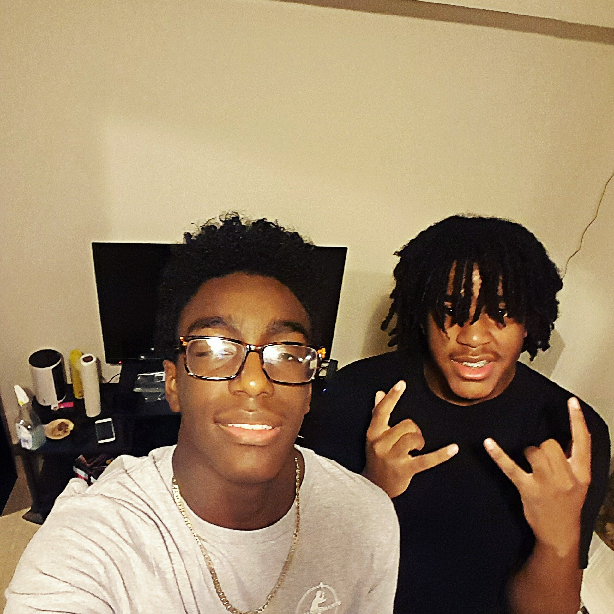

I’m a tall hispanic and african american man. With all those odd stacked against me I will always go for gold. I go to
george washington carver high school, that is where the start of my true journey will begin. I strive to be in the
computer science field for my career, mainly the programming side. Not only am I a computer nerd i’m also very athletic
something you would never think go together right. Sports has always been with me even as a little kid. With that
you can see I am a very committed person. If I like something a lot I will stick with it till the very end.